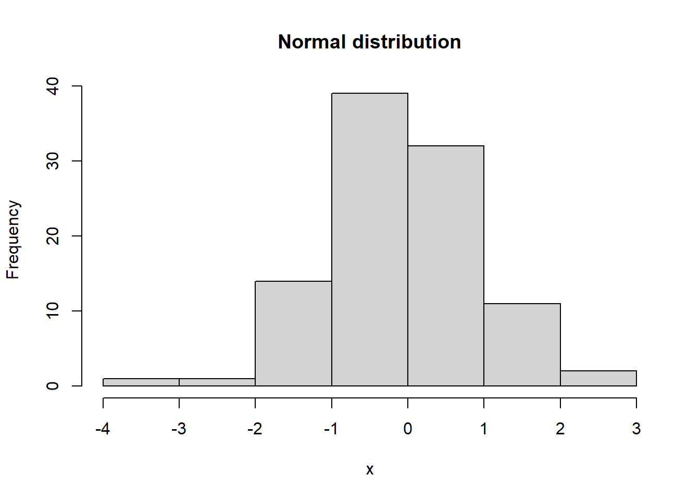
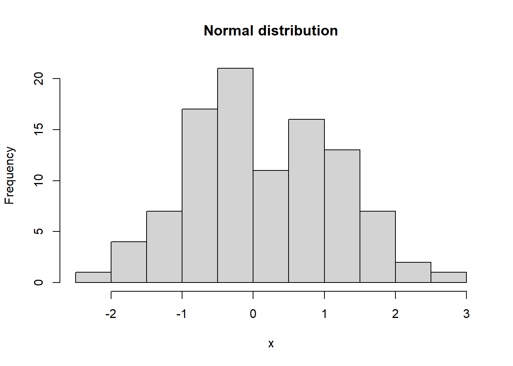

install.packages("StratPal")
install.packages("admtools")Getting Started
Overview
This document describes how to set up your machine so you can use the workshop materials
Requirements
The workshop materials requires R version 4.2 or later, which can be downloaded on CRAN. You can use R from the terminal or use an IDE of your choice, e.g., Rstudio.
The workshop assumes basic knowledge of R, meaning you should be able to write short code snippets and execute them. However, the focus of the workshop is the scientific content, so we provide code templates and snippets for you to work through. If you’re unsure of your R level you can work through this course by the software carpentry, which provides a good basis.
Package installation
The workshop relies on the StratPal and admtools packages (Niklas Hohmann and Jarochowska 2025; N. Hohmann et al. 2025) , which you can install from CRAN using the command
To use the materials, you will need at least version 0.7 of StratPal and version 0.6 of admtools. Installing the packages automatically installs all dependencies, e.g., the FossilSim package for simulating fossils and the paleoTS package for analysis of fossil time series (Barido-Sottani et al. 2019; Hunt and G. 2006).
The two packages have different responsibilities:
admtoolstakes care of the stratigraphy components, e.g., work with age-depth models and incompleteness.StratPaltakes care of the paleobiology components, e.g., trait simulations, niche modeling, and taphonomy, and provides example stratigraphic architectures.
With both packages installed, you are ready to work through the rest of the materials.
Piping
We will make extensive use of the piping operator |> in this workshop, which is a feature of base R since version 4.2.
You can read |> as “take what is on the left side of |> and use it as first argument in the function on the right side of |>”. For example, to plot a histogram of normally distributed random variables, you can use
rnorm(100) |> # 100 normally distrubuted random variables
hist(xlab = "x",
main = "Normal distribution")
Note how the first argument of hist is skipped as it is automatically replaced by the random numbers.
You can chain as many pipe operators together as you like:
100 |>
rnorm() |> # 100 normally distrubuted random variables
hist(xlab = "x",
main = "Normal distribution")
This solves two problems:
There is no need to assign intermediate variables that will then clutter your workspace. For example, to calculate the mean of the square root of uniformly distributed random numbers, it is tempting to do
t1 = runif(1000) t2 = sqrt(t1) x = mean(t2) # creates 2 unnecessary variables t2 and t2 x = runif(1000) |> sqrt() |> mean() # only the intended result is saved
You can read the code from left to right, making it easier to comprehend as the order of execution follows the order of reading. Continuing the above, it is tempting to write
x = mean(sqrt(runif(1000))) # has to be read from "inside out" (right to left) # instead of left to right, following the order of execution x = runif(1000) |> sqrt() |> mean()
References
Barido-Sottani, Joëlle, Walker Pett, Joseph E. O’Reilly, and Rachel C. M. Warnock. 2019. “FossilSim: An r Package for Simulating Fossil Occurrence Data Under Mechanistic Models of Preservation and Recovery.” Methods in Ecology and Evolution 10 (6): 835–40. https://doi.org/10.1111/2041-210X.13170.
Hohmann, N., D. De Vleeschouwer, S. Batenburg, and E. Jarochowska. 2025. “Nonparametric Estimation of Age–Depth Models from Sedimentological and Stratigraphic Information.” Geochronology 7 (3): 427–48. https://doi.org/10.5194/gchron-7-427-2025.
Hohmann, Niklas, and Emilia Jarochowska. 2025. “StratPal: An r Package for Creating Stratigraphic Paleobiology Modelling Pipelines.” Methods in Ecology and Evolution 16 (4): 678–86. https://doi.org/https://doi.org/10.1111/2041-210X.14507.
Hunt, and G. 2006. “Fitting and Comparing Models of Phyletic Evolution: Random Walks and Beyond.” Paleobiology 32 (4): –23. https://doi.org/10.1666/05070.1.